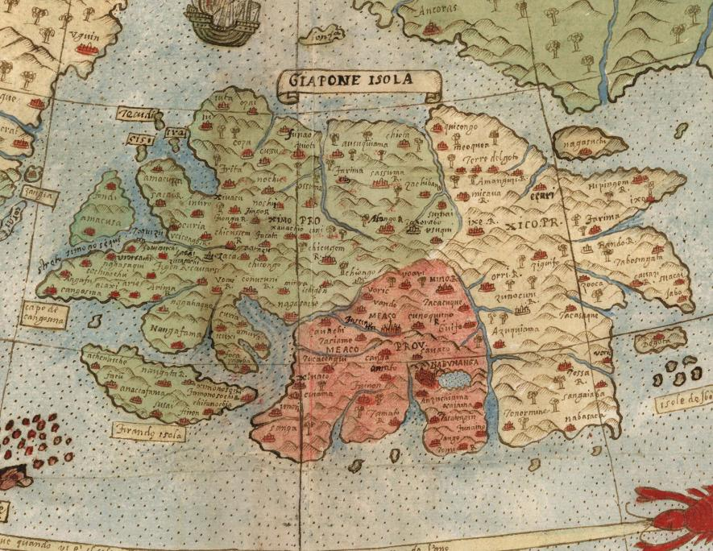

Vďaka jeho spojeniam na vysokých miestach sa Monte stretol s prvou oficiálnou japonskou delegáciou, keď navštívila Európu, Miláno v roku 1585. Možno v dôsledku toho jeho zobrazenie Japonska obsahuje mnoho miestnych mien, ktoré sa nezobrazujú na iných západných mapách tých čias.
